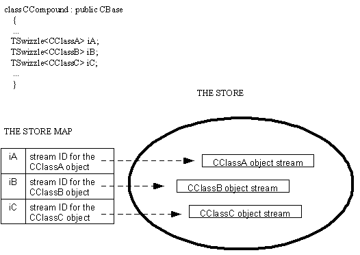

|
| |
A store map is a table of entries where each entry consists of a Swizzle and a stream ID.
When the in-memory object represented by a Swizzle is externalised,
the resulting stream ID and the associated Swizzle can be added to a store map.
The effect is to create an entry in the store map table containing the stream
ID and the associated Swizzle; the Swizzle is said to be bound to the stream
ID. Creating this entry in the store map is done using
CStoreMap::BindL().
For a container type class CCompound, the diagram below
shows the result of:
streaming out the in-memory objects represented by the Swizzles
iA, iB and iC.
binding the swizzles with the resulting stream IDs
The other characteristics of a store map follow from this.

Entries in the store map can be deleted. An entry can be identified
either by Swizzle or by stream ID. CStoreMap::Unbind() deletes an
entry identified by Swizzle; CStoreMap::Forget() deletes an entry
identified by stream ID.
Copyright ©2002 Symbian Ltd. 6.1-00174 |
|